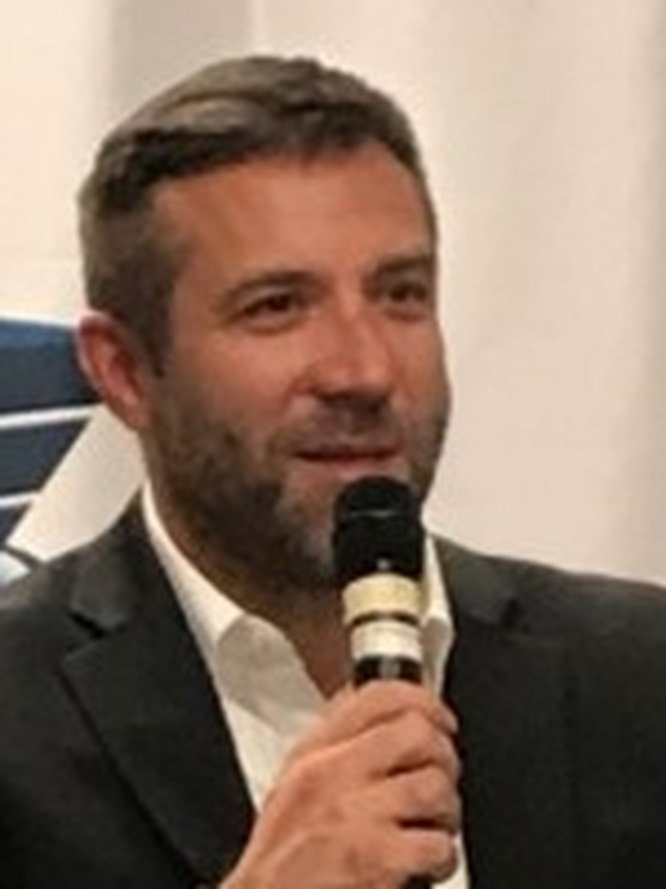

Every engagement starts with seeing where the market is moving before any relationship gets made or any introduction gets offered.
Relationship pipeline
Right relationships
Steady makes it last
A focused position, a LinkedIn presence built to match it, and a practical plan for becoming the operator people call when a growth opportunity needs the right relationships and real follow-through.
One position
One character
One LinkedIn profile, ready to paste
Thirty days of direction
One portable AI pack

Your Strategy
Move the right relationships forward
Positioning statement
Chris helps progressive operators pursue growth by combining relationship building, market foresight, business planning, and execution, with cannabis as a domain where his network runs deepest.
Most connectors lead with who they know. Chris leads with where the market is going and what has to happen for a relationship to become progress. His authority comes from staying accountable after the introduction is made.
- Category
- Relationship-led business development and strategic partnerships, cannabis as a key domain
- Distinctive idea
- Move the right relationships forward
- Founder role
- Chris is the brand. The relationships and the follow-through are his own.
The Focus Star
The whole position in five lines
-
Product
Relationship-Led Growth and Market Development.
Chris combines relationship building, market foresight, business planning, and execution to help clients pursue growth opportunities. He sees the opportunity, builds the right relationships, and executes the path forward.
-
People
Progressive Operators Seeking Smarter Growth.
Persona: The Progressive Growth Operator. Navigating a new market or growth opportunity where relationships, strategy, and execution must align.
-
Purpose
Leave Business Better Than You Found It.
Chris should invest in each business relationship so the other party is in a meaningfully better position because they worked together. Care is the responsibility to improve the other party's situation through useful judgment, relationships, and follow-through.
-
Promise
Move the Right Relationships Forward.
Brand DNA: Steadfast. Every engagement turns trust into observable commercial movement: the right introduction, a better-aligned opportunity, a clear next step, and dependable follow-through.
-
Personality
Steady Hero.
Selfless, reliable, caring, analytical, sophisticated, and willing to carry responsibility without making it about himself. Warmth and judgment work together.
Point of view
Growth comes from the right relationships, moved forward with follow-through.
01Relationships earn their place by the business progress they create, not by how many exist.
02Care shows up as follow-through.
03The right introduction, made at the right time, moves more than a hundred casual ones.
Proof bank
What makes the position credible
A relationship only counts as moved forward when there is a named next step and someone accountable for it. Activity without a named outcome does not count.
Cannabis and adjacent growth markets are where the network and experience run deepest, though the approach is not limited to one industry.
Client stories, numbers, and named outcomes go public only once Chris supplies them in his own words. Nothing here states a result that has not been confirmed.
Your Identity
Sound steady, look organized, stay accountable
Personality
One character across every conversation
Steady, caring, and analytical. Reliable, organized, and decisive when a choice has to be made.
This is the character every message, post, and conversation keeps. An operator should feel Chris is already thinking through their problem, and that he will still be there after the introduction is made.
He listens for the real opportunity before naming a relationship or a next step. Calm under pressure, never rushed into a pitch.
Short sentences, real situations, one idea at a time. Confidence without a sales voice.
Connected and friendly without turning casual or vague. The warmth shows up as follow-through.
Brand archetype
The steady hero who follows through
Six words define the read: caring, trustworthy, reliable, organized, analytical, selfless. The mix follows from Steady Hero.
- Hero leads. Carries responsibility without making it about himself, and moves the room forward when a decision is needed. This is the position itself.
- Caregiver and Sage support. Caregiver is the follow-through you can count on. Sage is the analytical read on the market and the relationship.
- Friend stays a trace. Connected and friendly without turning casual, never just a networker.
What Chris is not: a networker, a hype man, or a theatrical hero. No shock, no charm without a business outcome, no promises that sound like magic.
Voice principles
Sound like the person who already has a plan
01
Lead with useful clarity before warmth
Say the practical thing first. Warmth follows once the direction is clear.
You should feel supported before you feel sold to.
02
Care shows up as follow-through
Listening, organization, and follow-through are what make care visible, not the words around it.
The measure is whether people know you will still be there when it matters.
03
Ground every claim in business progress
Say what moved: a door opened, an alignment made, a next step named. Never a claim that cannot be felt or proven.
We can move fast, but we need a next step someone will actually carry.
04
Name the next step, every time
Close on the relationship or opportunity that should move next and who owns it. Steady means the follow-through is visible.
Here is what moves next, and here is who owns it.
How it looks
Real presence, organized rooms, nothing staged
Offices, meeting tables, structured notes, people in professional conversation. Real environments where business actually happens.
Calm business environments and clear posture for advisory moments. Real conversation, introductions, and rooms where trust is visible for relationship moments.
Real human presence in a mature business context.
No cannabis leaves, smoke, generic handshakes, luxury watches, or stock boardroom cliches.
Your profiles
Make the position clear to whoever is deciding whether to introduce you

Chris Boudreau
Relationship-led business development and strategic partnerships for progressive operators
San Diego, California{kind=link}
Headline
Relationship-led business development and strategic partnerships for progressive operators
Relationship-led business development and strategic partnerships for progressive operatorsAbout
Ready to paste
I help progressive operators pursue growth by combining relationship building, market foresight, business planning, and execution in one system.
The work starts with seeing where a market is going, then building the relationships that opportunity needs, then staying on it until the plan is executed. Cannabis is a domain I know well, and the same approach carries into any market where relationships, judgment, and follow-through decide the outcome.
Every relationship I take on should be in a better position for having worked with me. That means opening the right door, aligning the people around the opportunity, and staying accountable until the next move is clear.
If a growth opportunity is visible but the relationships or the plan to pursue it are not yet in place, that is where I come in.
Featured
What a referrer should see first
- 01The offer, in one paragraphPosition
The confirmed position statement, once it exists. The first thing an operator or a referrer should see.
- 02How I read a new marketMethod
A short framework document on reading a market before the relationships exist. The thing people forward.
- 03The next relationship storyProof, once confirmed
Replace this with the next real introduction or partnership once there is one to tell, named with permission.
Your 30-Day Plan
Thirty days, in order
The objective
Confirm the offer in his own words, rebuild the LinkedIn presence around it, and start ten real conversations with operators who fit the audience. Primary signal: ten first conversations started with operators who fit the audience, in thirty days.Confirm the offer
Write down, in one paragraph, exactly what Chris wants to be hired to do next. Everything else in this plan depends on this being clear and in his own words.
Rebuild the LinkedIn presence
Update the headline, the banner, the about section, and the featured items so the position is clear before anyone reads a post.
Start ten real conversations
Send ten short messages to operators who fit the audience or know someone who does. Name the opportunity, ask one question, and make replying easy.
Four-week sequence
Do these in order
-
Week01Offer and profile
Set the position
Confirm the offer in one paragraph. Update the LinkedIn headline, banner, and about section to match it.
-
Week02Proof and method
Prove the method
Publish one post per territory, each showing the relationship-and-execution approach at work in a real situation.
-
Week03Outreach
Open real conversations
Send the first five warm messages. Name the opportunity, ask one question, and make replying easy.
-
Week04Follow-through and review
Follow through and review
Send the last five warm messages. Review all ten conversations and note what each operator asked first.
Three content territories
Three territories, one steady reputation
Move the Right Relationships Forward
- What it looks like when a relationship actually moves forward
- The difference between knowing everyone and moving something forward
- Naming the next step, and who owns it
Reading the Market Before the Room
- How to read a new market before the relationships exist
- What good timing is worth compared to bad timing
- One lesson from the cannabis market that applies anywhere
Steady Under Pressure
- What steady looks like when the work gets real
- Telling the hard truth with care, not avoiding it
- Why reliability is the offer, not a side benefit
Five plays
Put the position to work in real conversations
Campaign
One paragraph: what I want to be hired to do next
A short, confirmed statement of the offer, turned into one pinned post and three follow-up posts that each unpack one line of it. The clearest thing Chris can publish this month.
- Audience
- Operators evaluating a new market or partnership
- Next step
- A first conversation about a specific opportunity
- Measure
- Replies that name a real opportunity
PR
What cannabis taught me about moving into any new market
Offer a business or trade outlet a practical perspective on reading a new market before the relationships exist, using cannabis as the proof case without turning the pitch into cannabis commentary.
- Targets
- Business and trade press covering market entry or partnerships
- Have ready
- One confirmed lesson, told without naming a client
- Measure
- Interview requests
Collaboration
A joint read on a shared opportunity
Pair with one operator or firm already active in a market Chris knows, and publish a short joint perspective on what the opportunity needs to work. The partner brings the market, Chris brings the relationship-and-execution read.
- Partner
- An operator or firm active in a market Chris knows
- Format
- One joint post or short conversation
- Measure
- Introductions that follow
Pro bono
One free read, no strings
Offer one operator a free hour reviewing a growth opportunity they are already looking at. Name what is working, what is missing, and one next step, then let them decide what to do with it.
- Rule
- One operator and one follow-up
- Value
- Real judgment and a grounded story once the results are in
- Measure
- Next steps taken and referrals that follow
Email + outreach
Ten operators who already trust him
Message ten people who fit the audience or know someone who does. Name the opportunity in one sentence, ask one question, and make replying easy.
- Audience
- Past collaborators, partners, and people who know his work
- Asset
- The one-paragraph offer statement
- Measure
- Three real conversations from ten messages
Use With AI
Carry the strategy into any conversation, starting today
This Markdown pack keeps the position, the voice, the proof, and the factual boundaries together in one place. Paste it at the start of a new conversation, then add one of the prompts below.
- Format
- Plain Markdown
- Works with
- ChatGPT, Claude, Gemini, Copilot, and other LLMs
- Includes
- Identity, instructions, context, examples, boundaries, and prompts
Loading your context pack...
Starter prompts
Pick the job, keep the strategy attached
01
Write a LinkedIn post
Using the brand context above, write one LinkedIn post in Chris's voice for the Move the Right Relationships Forward territory. Open with the reader's situation, give one plain-language idea, and close by naming a next step. Under 150 words, no emoji, at most two hashtags at the end.
02
Plan a month of posts
Using the brand context above, draft a four-week LinkedIn plan with two to three posts per week. Rotate the three content territories, give each post a one-line angle and a format (text post, short video, or document), and keep every angle inside the factual boundaries.
03
Draft the offer statement
Using the brand context above, draft three versions of a one-paragraph offer statement: what Chris wants to be hired to do next, in his own voice. Keep each version under 60 words and grounded in the strategy above, not a generic consultant pitch.
04
Shape a collaboration
Using the brand context above, write a short message proposing a joint perspective piece with an operator or firm already active in a market Chris knows. Explain what Chris brings, what the partner brings, and why it is useful to publish together. Plain, direct, no hard sell.
05
Build a campaign brief
Using the brand context above, plan a two-week campaign around the confirmed offer statement: the statement itself, three posts that each unpack one line of it, and one follow-up message for people who respond with a real opportunity. Keep the tone inside the voice principles.
06
Prepare warm outreach
Using the brand context above, write a short message Chris can send to ten people he already knows who fit the audience or know someone who does. Name the opportunity in one sentence, ask one question, and make replying easy. Under 80 words.